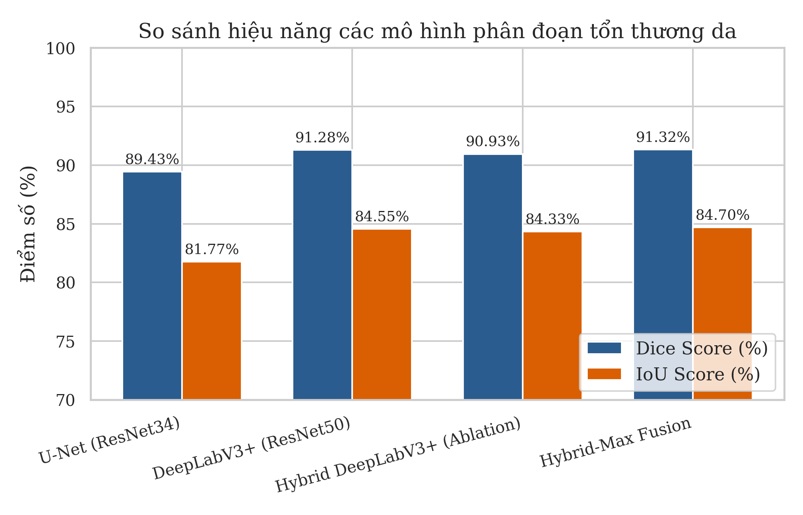
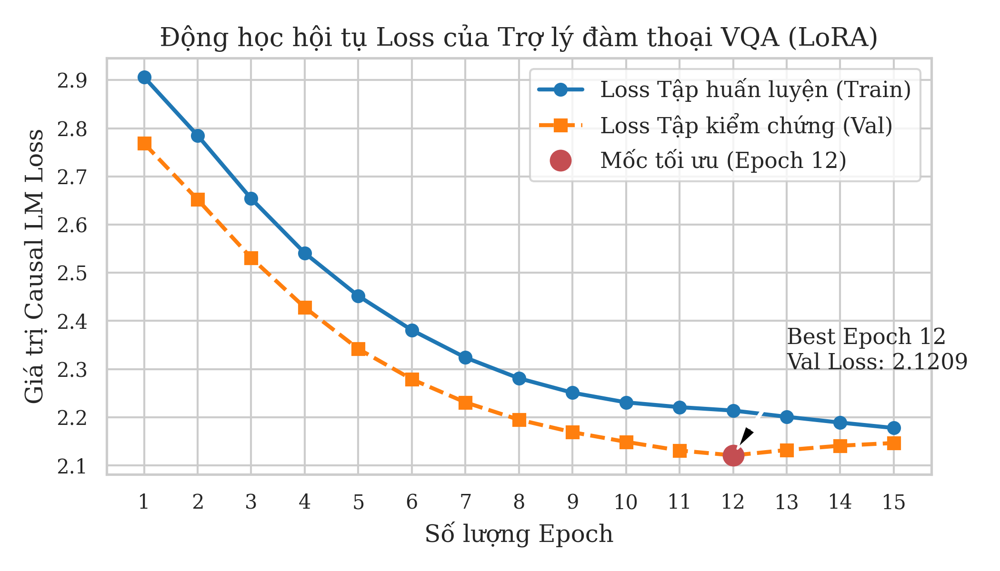
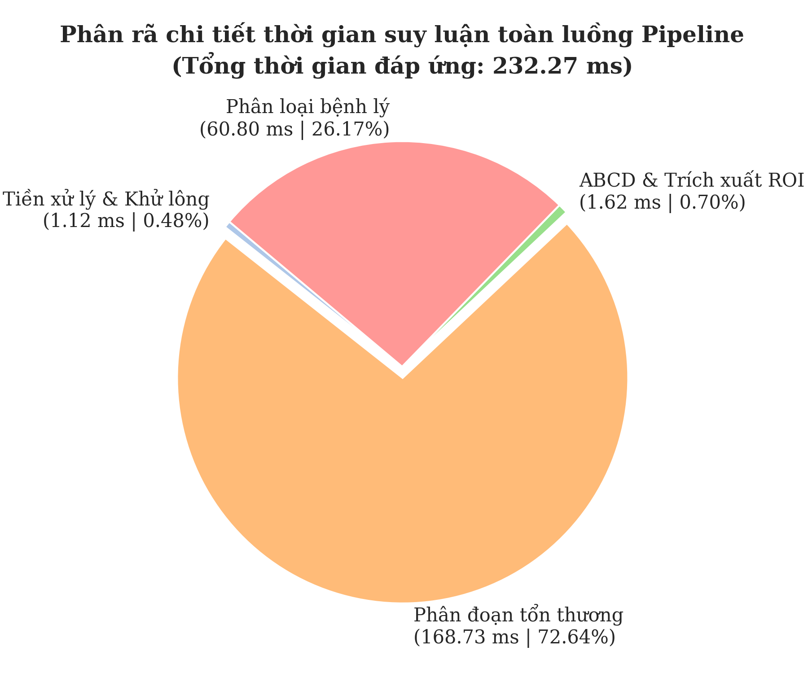

Hệ thống Chẩn đoán Da liễu Đa phương thức Tích hợp Thị giác Máy tính, Hội thoại
Y tế VQA và Hồ sơ Bệnh án Điện tử
Sinh viên thực hiện
Nguyễn Thành Nghĩa
Chuyên ngành
Khoa học Máy tính / Học máy
Giảng viên hướng dẫn
PGS. TS. Giảng Viên Hướng Dẫn
Hội đồng chấm
Khoa Công nghệ Thông tin
Tính cấp thiết & Mục tiêu Đề tài
Slide 2 / 9
Thách thức Y tế: Các bệnh lý ác tính về da (như Melanoma) tăng mạnh. Tỷ lệ
phát hiện sớm quyết định 99% tỷ lệ sống sót, nhưng thiếu hụt bác sĩ chuyên khoa sâu ở tuyến
cơ sở.
Hạn chế của AI hiện tại: Hầu hết là mô hình "hộp đen" đơn lẻ, thiếu khả
năng biện giải lâm sàng và liên kết EHR động qua nhiều mốc khám.
Mục tiêu Đồ án: Xây dựng hệ thống chẩn đoán đa phương thức hỗ trợ lâm sàng
(CDSS): Phân vùng (segmentation) đo chỉ số ABCD + Phân loại bệnh lý + Hội thoại VQA thông
minh + Quản lý EHR.
Đối tượng & Tính mới của Đề tài
Slide 3 / 9
Đối tượng nghiên cứu: 7 nhóm bệnh lý da liễu phổ biến (HAM10000). Dữ liệu: Ảnh chụp RGB (điện thoại/máy ảnh), tệp tin chuẩn y tế DICOM, và hồ sơ bệnh án bệnh nhân (Tuổi, Giới, Vị trí tổn thương).
Đối tượng thụ hưởng: Bác sĩ đa khoa tại các trạm y tế tuyến cơ sở (huyện, xã), hỗ trợ chẩn đoán chính xác ngay tại vùng sâu vùng xa.
Tính mới so với hệ thống hiện tại:
1. Chuyển đổi từ "AI Hộp đen" sang **XAI (Explainable AI)** biện giải qua ABCD lâm sàng và Grad-CAM.
2. Tích hợp **Đa phương thức** Late Fusion Bayes kết hợp demographics.
3. Trợ lý hội thoại VQA hỗ trợ chạy **Offline qua Ollama** giúp bảo mật tối đa bệnh án.
Kiến trúc Tổng quan hệ thống
Slide 4 / 9
Nguyên tắc song song: Nhánh phân vùng và Phân loại chạy độc lập song song
để đảm bảo tính khách quan lâm sàng, không gây nhiễu chéo dữ liệu.
Safety Gate (Cổng lọc An toàn): Đánh giá ảnh đầu vào (độ mờ Laplacian, độ
sáng) và độ tin cậy Top-1. Chỉ hiển thị kết quả chẩn đoán tự động khi vượt qua kiểm duyệt
chất lượng.
Chống thiên kiến chủng tộc: Tự động điều chỉnh hạ ngưỡng sáng tối thiểu của
Fitzpatrick xuống 30.0 nếu ảnh rõ nét, tránh từ chối chụp ảnh của bệnh nhân da sẫm màu.
Phân vùng tổn thương & Chỉ số ABCD
Slide 5 / 9
Mô hình đề xuất: Sử dụng DeepLabV3+ (ResNet50) và Multi-scale TTA (Scales: 1.0, 0.75, 0.5) tối ưu hóa phân đoạn ảnh chụp bằng điện thoại thường.
Phân đoạn tương tác (SAM Click + GrabCut): Tích hợp giải thuật GrabCut cải tiến khởi tạo bằng mặt nạ (`GC_INIT_WITH_MASK`) định vị chính xác vùng click chuột của bác sĩ lâm sàng để khoanh vùng tổn thương.
Bộ lọc OTSU dự phòng y khoa: Tích hợp thuật toán OTSU nghịch đảo (`cv2.THRESH_BINARY_INV`) tự động tách biên trong trường hợp mô hình học sâu phân đoạn lỗi, đảm bảo đo đạc chỉ số hình học ABCD luôn ổn định.

Phân loại bệnh lý & Hợp nhất Bayes
Slide 6 / 9
Kiến trúc phân loại chính: EfficientNet-B1 tích hợp khối chú ý kép CBAM (Channel & Spatial Attention) tập trung hiệu quả vào đặc trưng vùng tổn thương sắc tố.
Late Fusion Bayes đa phương thức: Kết hợp xác suất hình ảnh và các thông số dịch tễ học lâm sàng (Tuổi, Giới tính, Vị trí giải phẫu) để cá nhân hóa kết quả chẩn đoán.
Điều phối trọng số dịch tễ ($\lambda$): Thiết lập thanh trượt $\lambda$ động trên giao diện giúp bác sĩ chủ động giảm bớt/triệt tiêu ảnh hưởng của thiên lệch địa lý HAM10000 (dữ liệu người da trắng) khi khám cho bệnh nhân Việt Nam.
Trợ lý hội thoại y khoa VQA & RAG
Slide 7 / 9
VQA cục bộ (Local CPU & Edge LLM): Hỗ trợ mô hình nội bộ DistilGPT-2 LoRA (huấn luyện 2.13% tham số) chạy trực tiếp trên CPU, hoặc kết nối **Ollama** (`localhost:11434`) chạy các LLM lớn hơn (Qwen 3B/7B).
RAG y văn ngoại tuyến & trực tuyến: So khớp tài liệu y văn từ ChromaDB bằng khoảng cách Cosine. Chế độ Ollama nội bộ hỗ trợ đầy đủ RAG offline nhờ cửa sổ ngữ cảnh lớn, tránh ảo giác y khoa.
Vấn đáp trực tuyến & Rào cản thuốc: Tích hợp GPT-4o-mini và rào cản an toàn thuốc (Medication Guardrails) tự động lọc cảnh báo, ngăn chặn việc kê đơn thuốc tùy tiện gây hại cho bệnh nhân.

Kết quả Thực nghiệm & Ablation Study
Slide 8 / 9
Độ chính xác phân loại: Đạt **95.01%** toàn luồng trên ứng dụng thực tế (phiên bản tối ưu đạt 96.51% trong nghiên cứu cắt bỏ).
Tốc độ đáp ứng (Latency): Đạt tốc độ suy luận trung bình cực kỳ nhanh chỉ **232.27 ms** đầu cuối, phù hợp triển khai trên các thiết bị y tế cấu hình trung bình ở tuyến xã.
Ablation Study: Việc chuyển đổi từ ảnh thô sang cắt ROI bằng mặt nạ DeepLabV3+ đóng góp mức tăng trưởng độ chính xác cao nhất (từ 88.10% lên 95.01%), chứng minh sự tối ưu của Pipeline.

Kết luận & Đóng góp Xã hội
Slide 9 / 9
Đóng góp xã hội của đề tài:
1. *Bình đẳng hóa y khoa*: Giúp trạm y tế cơ sở (huyện/xã) tầm soát sớm ung thư da với chi phí tối thiểu, nâng cao chất lượng chẩn đoán vùng khó khăn.
2. *Hỗ trợ tự đào tạo bác sĩ*: Hệ thống VQA + RAG đóng vai trò như một chuyên gia cố vấn 24/7 giải thích kiến thức lâm sàng cho các bác sĩ trẻ.
3. *Tuân thủ an toàn dữ liệu*: Mã hóa EHR (SHA-256, XOR + Base64) bảo đảm bí mật thông tin bệnh án theo chuẩn HIPAA.
Kết quả đạt được: Xây dựng hoàn chỉnh hệ thống CDSS da liễu: chẩn đoán đa phương thức chuẩn xác, bảo mật cao thông qua Safety Gate, minh bạch hóa chẩn đoán và đồng bộ hóa EHR song song (1.5s).
Định hướng phát triển: Tích hợp sâu hệ thống PACS/RIS bệnh viện, kết nối DICOM SR và thiết kế cơ chế Học chủ động (Active Learning) từ các nét hiệu chỉnh biên tổn thương của bác sĩ.